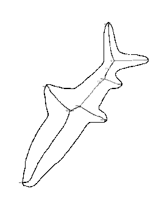
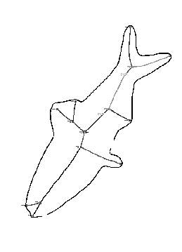
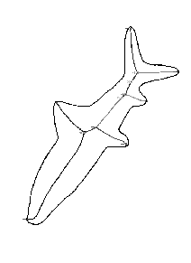
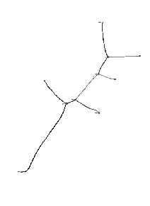
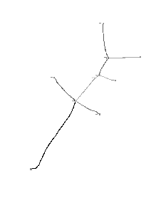
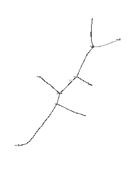
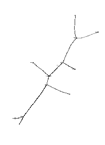
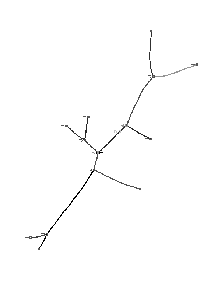
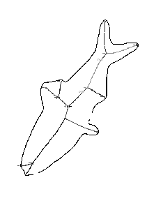

Next: About this document ...
Project: Edit-Distance Based Algorithsm for Shape-Based
Retrieval of Images
Collaborators: Benjamin Kimia, Thomas Sebastian
------------------------
Goal: Enable shape-based retrieval from an image database
- input: shape sketch
- output: images in database that most closely match input
shape
Question: How to measure similarity of shapes?
Answer: Compare their skeletons (labeled graphs)


--------------
What metric to use?
Earlier work by Kimia:
distance between labeled graphs = value of a quadratic
integer program.
Disadvantages:
- NP-hard, so heuristic used to solve (Graduated Assignment)
- Formulation does not respect the planar embedding of the graph.
- Formulation does not completely capture topology.
----------------
Our Approach - Edit Distance
- Define a set of elementary transformations (edit
operations and costs for these
transformations.
- Define distance between labeled graphs = minimum cost of a
sequence of edit operations that morph one graph into the other







---------------
Ongoing research
- How to define cost of edit operations (Klein has recent paper on
special case of curve matching)
- Faster edit-distance algorithms? (Klein has two recent papers making
some progress)
- Computing prototypes and clusters for shapes
represented by graphs.
- Fast processing of closest-shape queries.
-------------------
Papers
- ``A Tree-edit-distance algorithm for comparing simple, closed
shapes,''
with Srikanta Tirthapura, Daniel Sharvit, and Ben
Kimia, Proceedings, ACM-SIAM Symposium on Discrete Algorithms
(1999), pp. 696-704.
- ``Indexing based on edit-distance
matching of shape graphs,'' with Srikanta Tirtapura, Daniel Sharvit,
and Benjamin Kimia, Proceedings, SPIE International Symposium on
Voice, Video, and Data Communications (1998), pp. 25-36.
- ``Computing the edit distance between unrooted ordered trees'',
Proceedings, 6th European Symposium on Algorithms (1998),
pp. 91-102.
Next: About this document ...
Philip Klein
2000-03-02